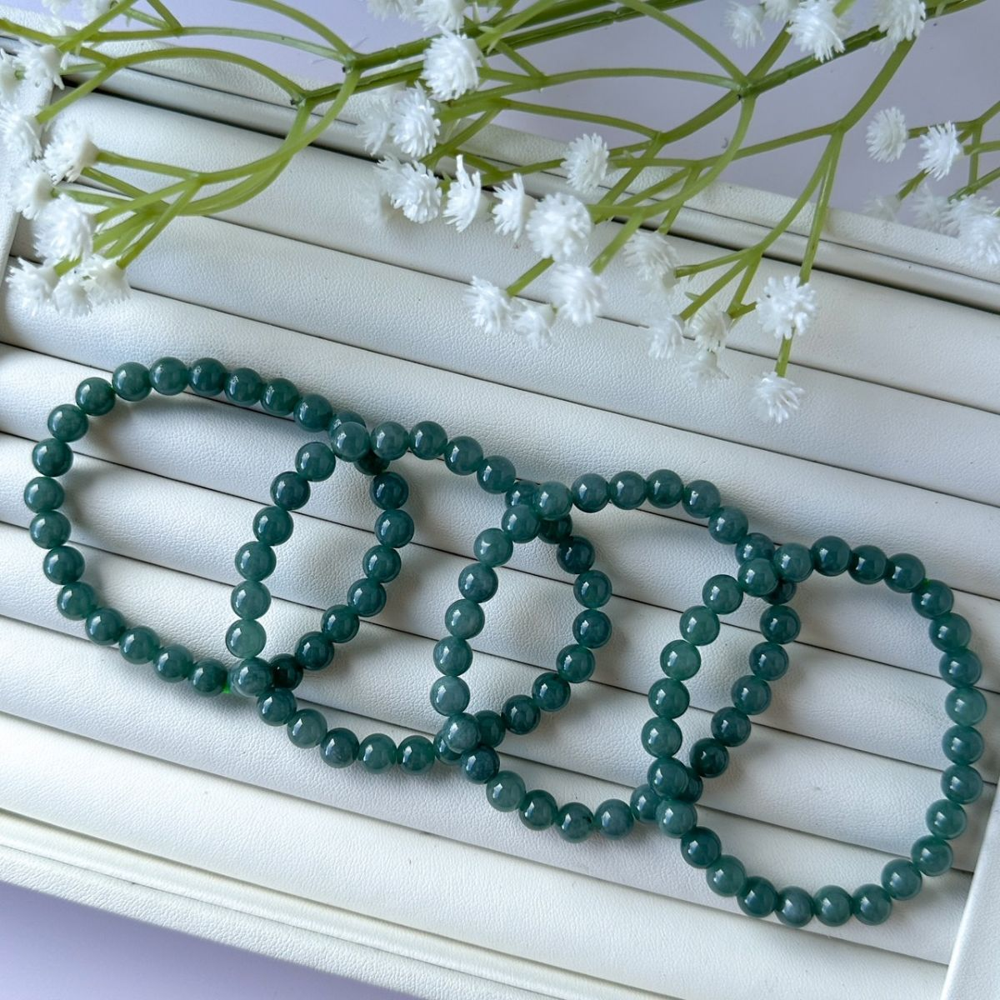

產地與礦物結構
產地背景
翡翠的知名產區包括緬甸等地；「藍水」描述的是外觀，並非產地。
礦物結構與名稱
翡翠通常以硬玉等輝石類礦物交織形成集合體，與單一晶體不同。顏色可以分布不均，呈半透明至不透明。
本頁產地是礦種資料中的產出紀錄，不代表照片中商品已完成產地鑑定；原料產地、加工地與販售地是不同資訊。
能量寓意與日常陪伴
平安祝福 · 吉祥 · 珍惜陪伴
翡翠在玉石文化中常承載平安與吉祥的祝福。這些是文化象徵，適合送給重視的人，或為自己留下一份長久陪伴的紀念；不同造型也有各自的傳統寓意。
以上為網路資料中的民間能量說法與文化寓意，僅供介紹參考，不代表科學功效或效果保證。
適合怎麼搭配？
奶白、灰藍或棉麻穿搭都能呼應溫潤感，愛心款也可搭簡單日常服裝。
日常保養
避免碰撞與刺激性清潔品；處理方式不明時，先採乾布輕拭。
看完整保養指南 →官網上的 翡翠 款式
沿用商品原名稱與照片；售價、庫存及服務依賣場最新資訊確認。

礦石寓意與能量相關內容整理自網路資料，僅供介紹參考，並非科學功效或效果保證。